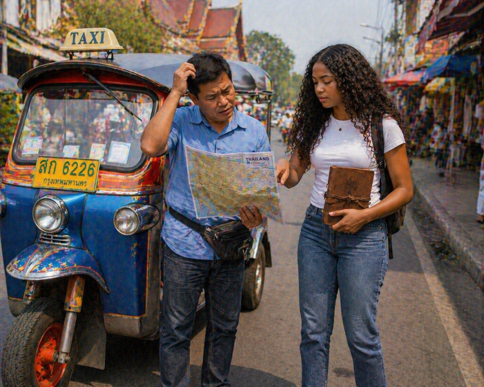
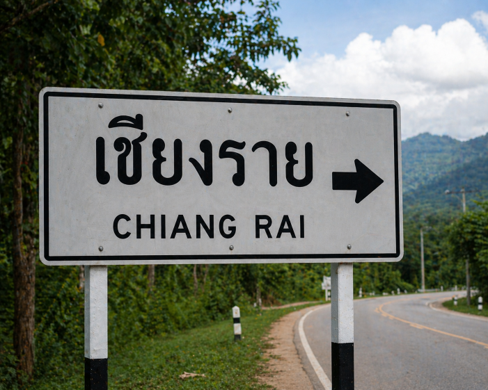
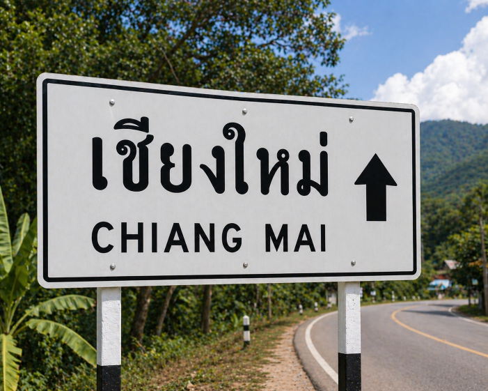

| Patricia stood beside the tuk tuk, holding the leatherbound notebook open as she explained everything to the driver. His face lit up when she mentioned her uncle’s name. “George? Yes, I know him,” he said, nodding quickly. “Always travelling, always chasing something.” Patricia felt a surge of relief, but it didn’t last long. When she showed him the page with the Thai writing, he frowned slightly. “This… old style, very tricky,” he admitted. “I can read some, but not sure.” He pointed to two possible place names, explaining that it could be referring to either Chiang Mai or Chiang Rai. Patricia’s excitement turned into uncertainty. Choosing the wrong place could send them in completely the wrong direction. |  |
| The driver pulled out a large, worn map and spread it across the front of the tuk tuk. Together, they leaned over it, comparing the notebook’s sketches and symbols with the map’s landmarks. Patricia traced a line between mountains drawn in the notebook and a similar range marked on the map, while the driver pointed out rivers and roads that matched parts of the puzzle. A small symbol—a triangle with a circle inside—appeared both in the notebook and near one of the cities. They paused, exchanging a look. “Maybe this is the clue,” the driver said thoughtfully. Patricia nodded, realising that solving this puzzle was the only way to know where Uncle George needed them to go. |
 |
 |